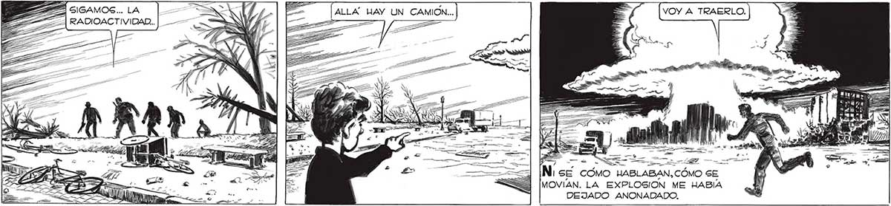
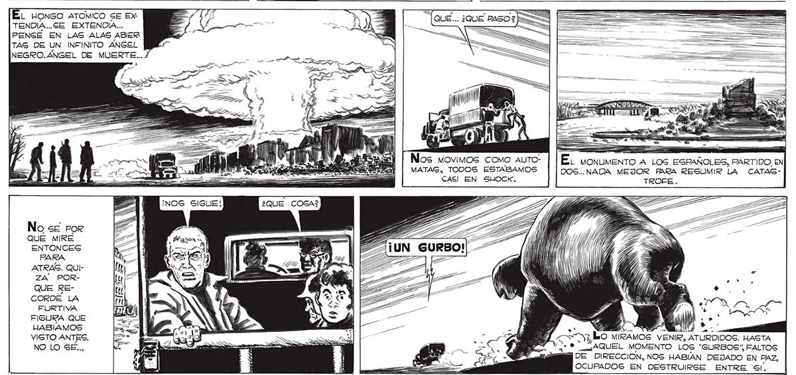

VOY A TRAERLO. 3 297 LAT == AOS HABLABAN, CÓMO SE MOVÍAN. LA EXPLOSION ME HABÍA DEJADO ANONADADO. : y AM e ] El honco ATomMICO SE Ex: = ( E . ¿QUE PASO?] TENDIA...SE EXTENDÍA... = $ ' a Y : a nes PENGÉ EN LAS ALAS ABIER TAG DE UN INFINITO ANGEL NEGRO. ANGEL DE MUERTE... Nos movimos COMO AUTO- | | EL MONUMENTO A LOS ESPAÑOLES, PARTIDO EN MATAG, TODOS ESTABAMOS DOS..NADA MEJOR PARA RESUMIR LA CATASCAS! EN SHOCK. QUÉ MIRE ENTONCES PARA Ae pS E ATRAS. QUI- 10 e CN ZA POR- NA » Í E ; pS E QUE RE- ña a, * CORDE LA 7 | FURTIVA a me : ¿IA FIGURA QUE 33 VW A ES 4 WÍ pl HABIAMOS E E ana | | EJ» a A VISTO ANTES. nu el osito "ZO DO MIRAMOS VENIR, ATURDIDOS. HASTA NO LO SE... 0 ETT <A LA V,: * AQUEL MOMENTO LOS “GURBOS”, FALTOS = BOE DIRECCION, NOS HABIAN DEJADO EN PAZ, OCUPADOS EN DESTRUIRSE ENTRE Gi.

